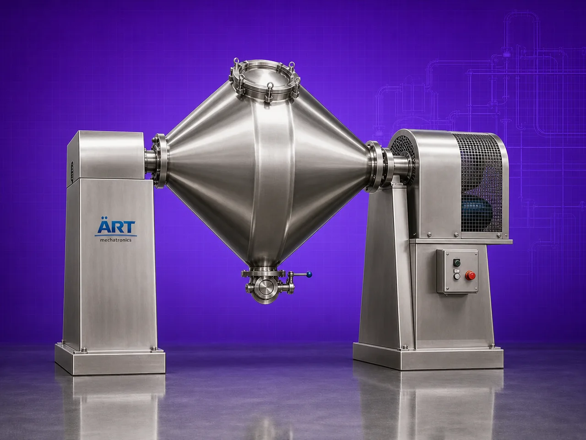

Double Cone Mixer Machine (Industrial Powder & Granule Blending System)
A Double Cone Mixer Machine, also known as a Double Cone Blender or Double Cone Powder Mixer, is a highly efficient industrial blending equipment designed for gentle and uniform mixing of powders, granules, crystals, flakes, and free-flowing dry materials.

About the Double Cone Mixer
The machine consists of a specially designed double cone-shaped rotating vessel, where materials tumble continuously during rotation, creating a gravity-based three-dimensional blending action that ensures:
- Homogeneous mixing
- Uniform product distribution
- Minimal product degradation
- Gentle handling of materials
- Low heat generation during mixing
Double cone mixers are widely used in industries such as:
• Pharmaceuticals
• Nutraceuticals
• Food processing
• Chemicals
• Cosmetics
• Agro products
• Ceramics
• Specialty powder industries
where precise dry powder blending and contamination-free processing are essential.
The machine is especially suitable for:
- Free-flowing powders
- Granule blending
- Fragile materials
- Heat-sensitive products
- Pharmaceutical powder mixing
- Nutraceutical blending
ART Mechatronics offers high-performance double cone mixer machines, engineered for precision blending, hygienic operation, energy-efficient processing, and reliable industrial performance.
One machine, many names
Buyers search for this equipment under many terms — we manufacture all of them:
Working Principle of Double Cone Mixer Machine
Creates gentle three-dimensional blending action
Types of Double Cone Mixer Machines
Industries Using Double Cone Mixer Machine
💊 Pharmaceutical Industry
- API and powder blending
🌿 Nutraceutical Industry
- Supplement and protein mixing
🍃 Food Processing Industry
- Powder and spice blending
⚗️ Chemical Industry
- Chemical powder mixing
💄 Cosmetic Industry
- Cosmetic powder blending
🌾 Agro Industry
- Seed and fertilizer blending
Features & Advantages
- Gentle and uniform blending action
- Suitable for fragile and heat-sensitive materials
- Low shear and low heat generation
- Excellent mixing homogeneity
- Hygienic and contamination-free operation
- Energy-efficient performance
- Heavy-duty industrial construction
- Easy cleaning and maintenance
- Suitable for pharmaceutical and food-grade applications
Technical Highlights
- Capacity: Lab scale to industrial production scale
- Mixing Type: Tumbling double cone blending action
- Construction: Stainless Steel / Mild Steel
- Vessel Design: Double cone rotating vessel
- Heating/Cooling: Optional jacketed system
- Operation: Manual / Automatic / PLC-based
- Discharge: Butterfly valve / pneumatic discharge
Turnkey Blending Solutions
ART Mechatronics offers:
- Complete double cone mixer system design
- Vacuum and jacketed system integration
- Feeding and discharge automation
- Dust collection integration
- Installation & commissioning
- After-sales service & AMC
Why Choose Art Mechatronics
- Expertise in industrial powder blending systems
- Customized solutions for multiple industries
- Hygienic and GMP-compliant machine designs
- Energy-efficient and reliable operation
- Proven industrial performance across sectors
Applications
- Pharmaceutical Manufacturing Units
- Nutraceutical Production Plants
- Food Processing Industries
- Chemical Manufacturing Plants
- Cosmetic Production Facilities
- Agro Product Processing Units
Related Mixing & Blending machines
Get pricing & specs for the Double Cone Mixer
Share the product, target capacity, current process and plant location. These details help our engineers discuss the right machine or line configuration.
One partner, from design to start-up
ART Mechatronics designs, manufactures, installs and commissions your Double Cone Mixer solution with regional presence in India, UAE and Thailand.